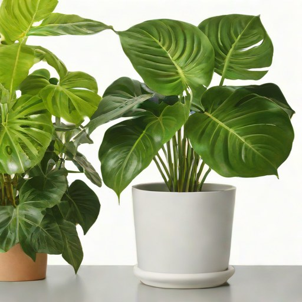
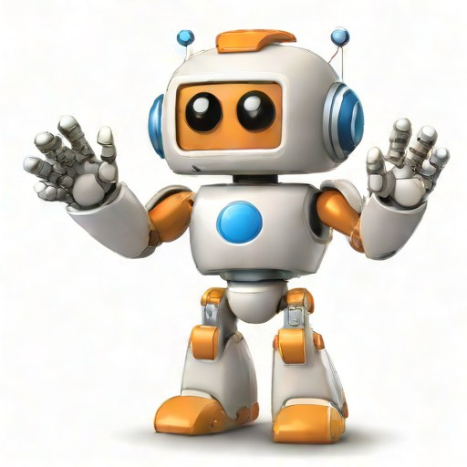
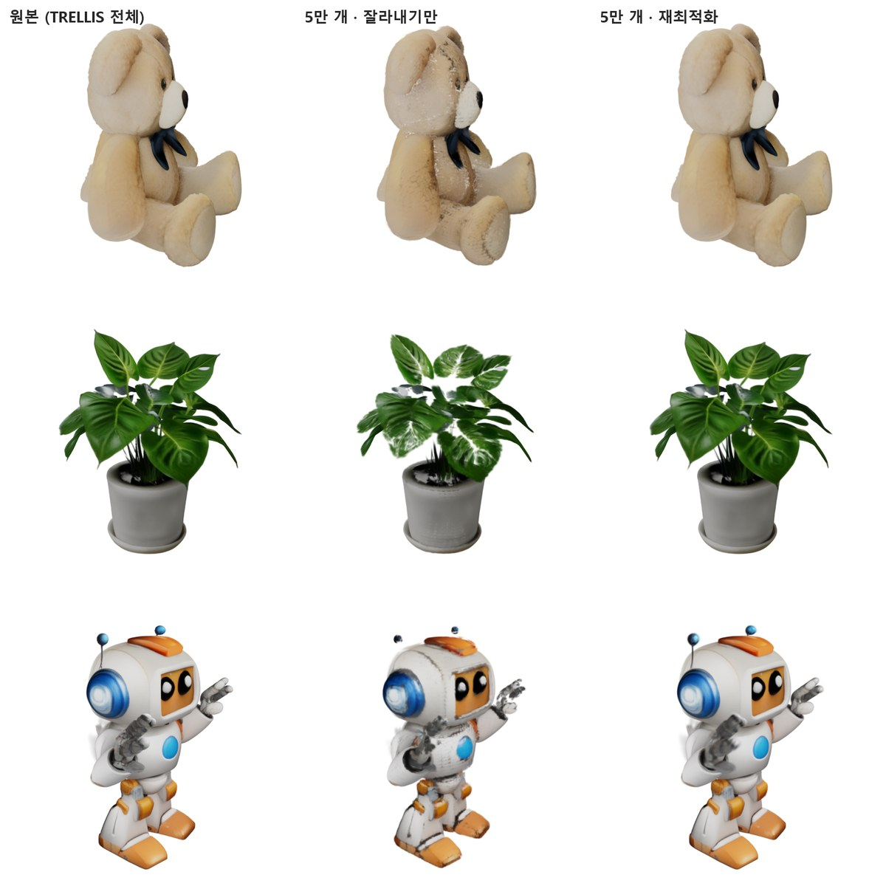
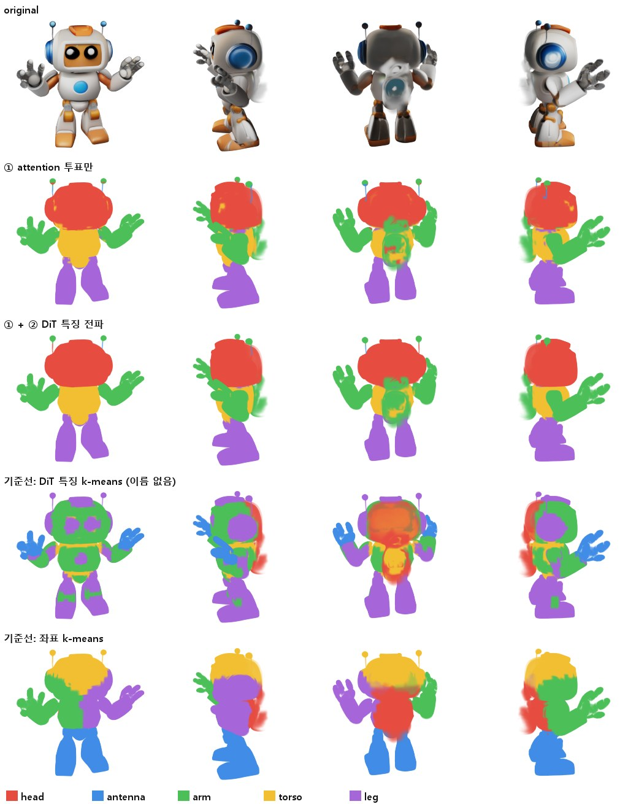
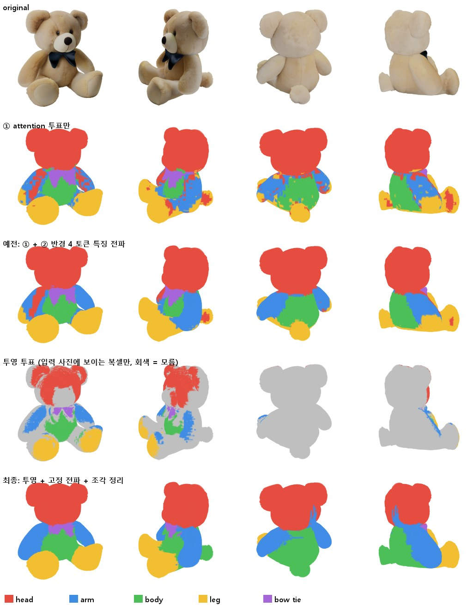
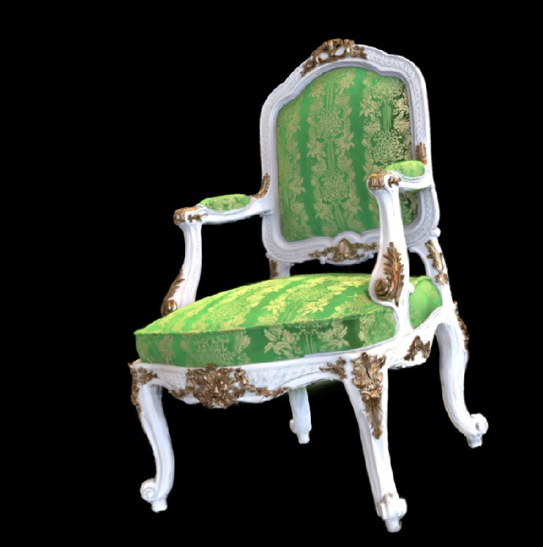
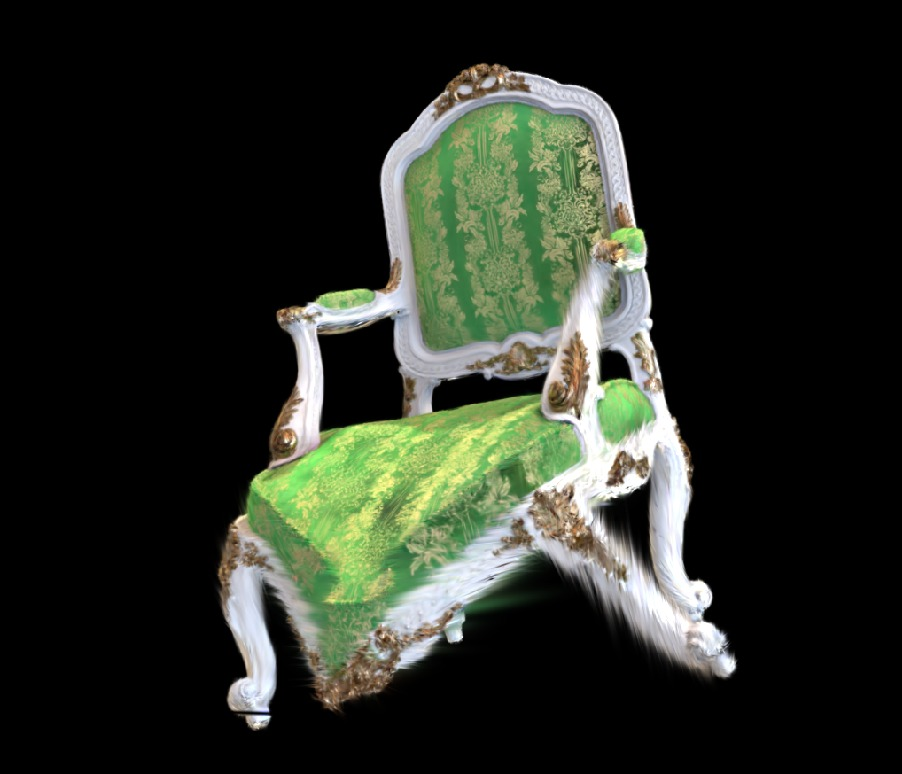
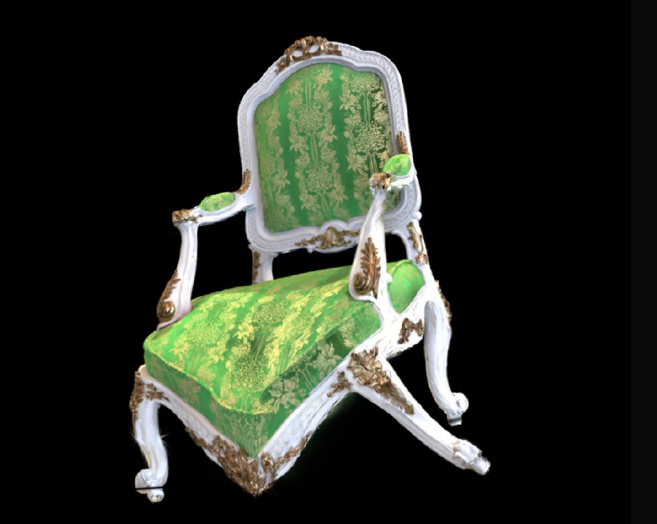

곰 인형
“a cute plush teddy bear toy sitting”귀를 잡아 옆으로 당김 — 부드러운 물체 · 생성 가우시안 794,944개 → 재최적화 99,999개 → 그래프 간선 958,701개 (가장 큰 연결 성분 100.0%) · 2배 넘게 늘어난 간선 0%
Graphics · 3D Representation · Generative 3D
3D 표현(볼륨 → NeRF → 3D Gaussian Splatting)의 내부 구조를 다뤄 온 그래픽스 연구자입니다. 렌더링만 되는 3D 를 구조를 가진 편집 가능한 표현으로 바꾸는 연구(APG-GS, IEEE CG&A 1저자 게재 확정)를 했고, 이번에 그 엔진을 생성형 3D 파이프라인에 연결했습니다.
텍스트 한 줄 → 이미지 → 3D Gaussians → 개수 조절(79만 → 10만, 화질 유지) → 구조 그래프 → 잡아당겨 편집.
가우시안을 점이 아닌 비등방 타원체로 보고 Bhattacharyya 겹침으로 구조를 복원, 변형 때 공분산까지 Σ′ = FΣ₀Fᵀ 로 갱신.
CUDA XPBD 솔버(10만 가우시안 1프레임 5.7 ms), OpenGL 기반 3DGS 뷰어와 편집 결과 렌더링까지 구현.
| 필요 역량 | 근거 |
|---|---|
| 생성형 2D/3D | SDXL-Turbo(2D) · TRELLIS(3D, structured latent → Gaussian)를 로컬 GPU 에 직접 올려 파이프라인 구성, 출력 표현을 편집 엔진에 연결 → 데모 |
| Graphics 이론 | 3DGS 공분산·투영, 변형 기울기 F 추정과 Σ′ = FΣ₀Fᵀ, Bhattacharyya 거리, 볼륨 렌더링(ray marching · transfer function) → APG-GS |
| 실시간 3D 편집 도구 | SIBR(OpenGL) 뷰어에 가우시안 그래프 구축·변형·공분산 갱신 기능을 구현하고, 생성 결과를 같은 편집 파이프라인으로 연결 → APG-GS |
| Graphics API | OpenGL(의료 볼륨 렌더링, SIBR 뷰어), CUDA 커널 설계·최적화(워프 단위 gather, atomic 없는 결정적 누적) |
| AR 컨텐츠 저작 | 찍거나 생성한 3D 를 편집·상호작용 가능한 에셋으로 만드는 전 과정(정리 → 정렬 → 구조 → 변형 → 엔진)을 한 명령으로 |
NEW · 생성형 3D 데모
생성 모델이 만든 3D 는 보기에는 완성돼 있지만, 가우시안끼리 관계가 없어 자연스럽게 고치거나 만질 수 없다. 이 데모는 생성 결과에 구조를 입혀 바로 편집 가능한 에셋으로 만든다.
“a cute plush teddy bear toy sitting”귀를 잡아 옆으로 당김 — 부드러운 물체 · 생성 가우시안 794,944개 → 재최적화 99,999개 → 그래프 간선 958,701개 (가장 큰 연결 성분 100.0%) · 2배 넘게 늘어난 간선 0%
“a potted monstera plant with large leaves in a white ceramic pot”
잎 끝을 잡아 들어 올림 — 얇은 구조 · 생성 가우시안 470,048개 → 재최적화 99,961개 → 그래프 간선 945,343개 (가장 큰 연결 성분 87.4%) · 2배 넘게 늘어난 간선 0.003%
“a cute cartoon guide robot mascot character standing”
팔을 잡아 들어 올림 — 캐릭터 자세 편집 · 생성 가우시안 655,936개 → 재최적화 99,570개 → 그래프 간선 963,700개 (가장 큰 연결 성분 100.0%) · 2배 넘게 늘어난 간선 0.04%
TRELLIS 는 표면에 걸린 복셀마다 가우시안을 고정 32개씩 만들어 에셋당 30만~80만 개가 된다. 렌더링에는 괜찮지만 편집·물리에는 과하다. 중요도(불투명도 × 두 큰 축 곱) 상위 N 개만 남기면 구멍과 얼룩이 생기므로, 원본을 무작위 시점에서 렌더한 이미지를 정답으로 남은 가우시안의 위치 · 크기 · 회전 · 불투명도 · 색을 다시 맞췄다 (Adam, L1, 3000회, 에셋당 약 13 s).

물체 PSNR = 흰 배경을 빼고 물체 픽셀만 원본 렌더와 비교 (학습에 쓰지 않은 고정 8방향 평균). 원본은 TRELLIS 출력이므로 '원본을 얼마나 그대로 옮겼나' 를 잰 값이다.
| 에셋 | 10만 개 · 물체 PSNR 원본 대비 · 높을수록 같음 | 5만 개 · 물체 PSNR | XPBD 1스텝 (20회 반복) 낮을수록 빠름 | 그래프 준비 변환~순서 대응 | 위치만 vs Σ′ 갱신 평균 픽셀 차이 (0~255) | ||||||
|---|---|---|---|---|---|---|---|---|---|---|---|
| 잘라내기만 | 재최적화 | 잘라내기만 | 재최적화 | 원본 | 10만 | 5만 | 원본 | 10만 | 원본 | 10만 | |
| 곰 인형 원본 791,253개 | 24.5 dB | 49.0 dB | 20.9 dB | 45.8 dB | 97 ms | 18 ms | 10 ms | 66 s | 15 s | 0.08 | 0.18 |
| 화분 원본 308,076개 | 19.2 dB | 37.1 dB | 14.2 dB | 33.0 dB | 51 ms | 19 ms | 10 ms | 33 s | 15 s | 0.46 | 0.67 |
| 안내 로봇 캐릭터 원본 542,121개 | 21.4 dB | 43.4 dB | 16.1 dB | 36.0 dB | 49 ms | 17 ms | 9 ms | 52 s | 15 s | 0.18 | 0.25 |
RTX 4070 SUPER 12 GB 한 장에서 잰 값 (모두 측정 로그에서 읽음). 3D 생성 = TRELLIS 두 단계 샘플링(각 25스텝) + Gaussian 디코딩, 모델 로딩 제외.
| 에셋 | 3D 생성 TRELLIS 샘플링 | 최대 VRAM 3D 생성 | 생성된 가우시안 | 재최적화 → 10만 개 · 3000회 | 2배 넘게 늘어난 간선 10만 개 판 · 당긴 뒤 · 낮을수록 좋음 |
|---|---|---|---|---|---|
| 곰 인형 | 25 s | 5.9 GB | 794,944 | 13 s | 0% |
| 화분 | 21 s | 5.7 GB | 470,048 | 12 s | 0.003% |
| 안내 로봇 캐릭터 | 19 s | 5.8 GB | 655,936 | 13 s | 0.04% |
NEW · 생성 과정의 의미 정보 → 가우시안 부위 → 물리 편집
원본 3DGS 의 가우시안은 자기가 머리인지 팔인지 모른다 — 색을 맞춘 결과일 뿐이다. TRELLIS 는 3D 복셀을 만들 때 입력 이미지의 어느 부분을 보는지(cross-attention)와 부위 구조가 담긴 중간 특징(DiT)을 거친다. 이 신호를 생성 도중에 꺼내 입력 이미지의 부위 이름을 3D 로 옮겼다. 결과: 모든 가우시안이 part_id 와 신뢰도를 가진다 (PLY 속성으로 내보냄 · 로봇 10만 개 = 머리 34,972 · 팔 21,017 · 몸통 17,990 · 다리 25,591).
기하 그래프에는 '부위' 가 없으니 물성도 온몸에 하나뿐이다 — 흔들면 머리 · 몸통 · 팔이 한 덩어리 젤리처럼 같이 출렁인다. part_id 가 있으면 부위마다 물성을 줄 수 있다: 몸통 · 머리 · 다리는 강체로, 양팔만 무른 XPBD 연체로. 같은 받침을 같은 폭(±4 cm · 2 Hz · 1.6 s)으로 흔든 뒤 멈춘다.
| 흔들림 (받침 이동을 뺀 변위 RMS) | 머리 | 몸통 | 팔 |
|---|---|---|---|
| 기존 그래프 · 온몸 같은 연체 | 2.20 cm | 1.35 cm | 2.18 cm |
| 의미 부위 · 몸체 강체 + 양팔 연체 | 0.00 cm | 0.00 cm | 3.04 cm |
물성 — 기존 그래프: 온몸 간선 강성 0.3 · 물체 형상 유지 0.1 (다리만 받침에 고정). 의미 부위: part_id 가 팔이 아닌 가우시안(몸통 · 머리 · 다리)은 강체로 받침과 함께 움직이고, 팔 가우시안만 간선 강성 0.2 · 형상 유지 0.08 의 XPBD 연체. 어느 부위를 단단 / 무름으로 할지는 사람이 정했다 — 부위 이름에서 재질을 자동으로 정하는 것은 다음 단계.
행: 원래 색 · ① attention 만 · ① + ② · 기준선(DiT 특징 k-means, 이름 없음) · 기준선(좌표 k-means). 열: 네 방향. 좌표 군집은 머리와 몸을 가로질러 자르고, 특징 군집은 외관(무늬)으로 묶인다. 이름은 attention 이, 경계는 DiT 특징이 준다.


선행 연구 · IEEE Computer Graphics and Applications 1저자 (게재 확정)
원본 3DGS 의 가우시안은 서로 관계가 없는 독립 primitive 라, 한 곳을 움직이면 나머지가 따라오지 않는다. 가우시안 사이의 구조를 복원하고, 그 위에서 변형을 풀고, 렌더링 공분산까지 함께 바꾼다.
KD-tree 로 후보를 찾고, 두 공분산 타원체의 Bhattacharyya 거리로 겹침을 점수화해 강한 겹침만 연결. 중심 거리 · 방향 · 크기를 손으로 따로 가중할 필요가 줄어든다.
DB = ⅛ dᵀ Σ̄⁻¹ d + ½ ln( det Σ̄ / √(det Σᵢ det Σⱼ) ), Σ̄ = ½(Σᵢ + Σⱼ)
거리 · 부피 제약을 GPU 에서 병렬로 푼다. 부피 제약을 atomic 없는 gather + 클러스터당 1워프로 바꿔 47.5 → 21.5 ms (2.21배), 워프 덕분에 가능해진 설정으로 20.0 → 5.7 ms (175 FPS). 1프레임 시간, 짧을수록 좋음.
이웃 변위로 국소 변형 기울기 F 를 추정(polar 분해로 회전 · 늘어남 분리)해 가우시안의 방향과 크기도 갱신. 중심만 옮기면 늘어난 면이 찢어진다. 비용 0.4 ms · 프레임의 약 2%.



연구 흐름
하고 싶은 연구 (계획)
생성 단계에서 파트 · 연결 · 재질을 함께 내놓아, 생성 직후 물체 단위로 편집 · 변형 · 애니메이션.
생성 가우시안의 개수 · 크기를 용도(렌더 / 물리 / 모바일 AR)에 맞게 조절하는 표현과 LOD.
텍스트 · 스케치 · 드래그로 공간 컨텐츠를 만들고 고치는 도구 — 실제 공간 스캔과 생성 에셋을 한 장면에서.